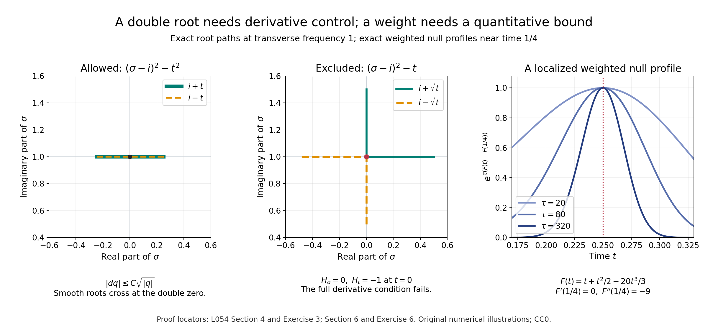

Which conormals admit simple and double Cauchy factors?
The simple-root uniqueness theorem excludes every repeated normal-frequency root. A repeated nonreal root can still be usable: its quadratic polynomial may vary regularly even when its individual roots do not. Real roots require a different condition, because the direction of the exponential weight matters. This lesson defines the admissible conormals and proves their local geometry. The mixed-factor uniqueness theorem is a subsequent analytic task.
We use \(D=-i\partial\), real base variables \(y=(t,x)\), and fiber variables \(\zeta=(\sigma,\eta)\). Our Poisson bracket is \(\{f,g\}=\partial_\zeta f\cdot\partial_y g-\partial_y f\cdot\partial_\zeta g\). The bracket includes the time-frequency pair. Finite normal-frequency factorization and homogeneity are also used in Simple characteristic roots and local Cauchy uniqueness, Section 2. The analytic first-factor, quadratic-factor and bracket estimates are proved, respectively, in Exponential weights for first-order Cauchy factors, A double-root estimate without choosing smooth roots, and When a bracket controls the lost curvature. We establish the receiving symbol conditions here; invoking those estimates does not yet assemble a uniqueness theorem. Historical attribution is Hörmander [H, Definition 28.1.7 and the symbol reduction in Theorem 28.1.8].
1. Four conditions, with an oriented tube convention
Let \(X\) be a smooth manifold, and let \(p(y,\zeta)\) have smooth complex coefficients and be a homogeneous fiber polynomial of degree \(m\geq1\). Its polynomial extension allows complex fiber variables; the base remains real. All complex derivative norms below use a fixed local Euclidean norm. Different such norms are equivalent on the bounded neighborhoods used in the proofs.
At a real characteristic covector \((y_0,\zeta_0)\), say that \(p\) is microhyperbolic in the covector direction \(N\) if, in local coordinates, there are a real neighborhood \(U\) of \((y_0,\zeta_0)\) and \(s_0>0\) such that
\[ p(y,\zeta+i sN)\ne0 \quad\text{for }(y,\zeta)\in U,\quad0<s<s_0. \tag{1.1} \]The direction is held constant in that chart. At the simple real roots relevant here, Section 2 proves robustness under small changes of direction. Consequently the convention is compatible with coordinate changes and with smooth local extensions of \(N\). The positive imaginary shift is essential. It agrees with the analytic-function convention in [R, Definition 4.2.1]; only the fiber is analytically extended in the present polynomial setting.
For \(N\in T_y^*X\setminus0\), define \((y,N)\in\Gamma(p)\) by the following four requirements.
- Noncharacteristic direction: \(p(y,N)\ne0\).
- Normal-frequency multiplicities: for every real \(\xi\notin\mathbb RN\), all real roots of \(s\mapsto p(y,\xi+sN)\) are simple, and all its nonreal roots have multiplicity at most two.
- Real-characteristic condition: at every real \(\xi\ne0\) with \(p(y,\xi)=0\), some real cotangent neighborhood satisfies either
or (1.1) holds there with direction \(N\).
- Complex-characteristic derivative condition: at every \(\zeta_0=\xi+sN\), with \(\xi\) real, \(\operatorname{Im}s\ne0\), and \(p(y,\zeta_0)=0\), some neighborhood in the complexified cotangent bundle and some local coordinates satisfy
The left side in (1.3) includes all base and fiber derivatives. The inequality is required at complex characteristic points throughout the neighborhood, including points whose imaginary part is not parallel to \(N\). It is not merely an inequality on the original real-parameter family of normal lines. The choice of a neighborhood and its constant can depend on the characteristic point.
When the fiber dimension is one, condition 1 makes the other conditions vacuous: the homogeneous polynomial has no nonzero real or nonreal characteristic covector. Thus \(\Gamma(p)\) is exactly the set in condition 1 in that case. Below we treat transverse dimension at least one.
2. A simple real root and its orientation
Choose coordinates with \(N=dt\). Divide by the nonvanishing leading coefficient \(p(y,N)\). Near a real simple root \((y_0,\sigma_0,\eta_0)\), the complex implicit-function theorem gives
\[ p(y,\sigma,\eta)=(\sigma-a(y,\eta))h(y,\sigma,\eta), \qquad h\ne0. \tag{2.1} \]The branch \(a\) is smooth in real \(y\), holomorphic in complex \(\eta\), and equals the real number \(\sigma_0\) at the reference point. Polynomial division gives \(h\); its nonvanishing follows from \(\partial_\sigma p\ne0\). Choose nested neighborhoods whose closures are contained in this factorization region.
Lemma 2.1. On a sufficiently small real neighborhood, microhyperbolicity in \(dt\) is equivalent to \(\operatorname{Im}a(y,\eta)\leq0\). Microhyperbolicity in \(-dt\) is equivalent to \(\operatorname{Im}a(y,\eta)\geq0\). Either property, once true on a neighborhood, persists for sufficiently close constant directions on a smaller neighborhood.
Proof. If the imaginary part is nonpositive, then \[ \operatorname{Im}(\sigma+i s-a)=s-\operatorname{Im}a\geq s>0. \tag{2.2} \] Shrink the tube so that \(h\) is nonzero. This proves (1.1). Conversely, shrink the real neighborhood so that \(|\operatorname{Im}a|<s_0\) and \(\operatorname{Re}a\) lies in its normal-frequency interval. Any positive imaginary part would give the prohibited zero at \(\sigma=\operatorname{Re}a\), \(s=\operatorname{Im}a\). Reversing the shift proves the assertion for \(-dt\).
For robustness write \(N'=(n_t,n_x)\), close to \((1,0)\). Uniform holomorphic Taylor expansion on the smaller neighborhood gives
\[ \begin{split} \operatorname{Im}\bigl( \sigma+i s n_t-a(y,\eta+i s n_x)\bigr) &=s\bigl(n_t-\operatorname{Re}\partial_\eta a\cdot n_x\bigr)\\ &\quad-\operatorname{Im}a(y,\eta) +O(s^2|n_x|^2). \end{split} \tag{2.3} \]The derivative bounds are uniform. Choose the directional neighborhood so that the coefficient of \(s\) is at least \(3/4\), and then the tube size so that the remainder is at most \(s/4\). The right side is at least \(s/2\). The factor \(h\) stays nonzero by another fixed shrink. The same argument, with signs reversed, applies near \(-dt\). A direction depending smoothly on the base is allowed if its values stay in this directional neighborhood. \(\square\)
Let \(\ell=\sigma-a\), and write \(a=A+iI\). Its full bracket is
\[ b:=\frac{\{\overline\ell,\ell\}}i =2\{A,I\}_{x,\eta}-2\partial_t I. \tag{2.4} \]This sign follows by expanding \(\ell=(\sigma-A)-iI\) with the stated bracket. In particular, both the transverse bracket and the time derivative must be retained.
Products by a nonvanishing smooth scalar \(h\) obey, on bounded real neighborhoods,
\[ B_{h\ell}=|h|^2b+O(|\ell|). \tag{2.5} \]Indeed the two product-rule terms with exactly one differentiated factor \(\ell\) contain \(\ell\) or \(\overline\ell\), and the term with both contains \(|\ell|^2\). The remaining term is \(|h|^2\{\overline\ell,\ell\}/i\). The bounded first derivatives of \(h,\ell\), and the positive lower bound for \(|h|\), give the stated estimate. Consequently (1.2) for \(p\) implies \(b\geq-C|\ell|\) for this factor. Put \(\sigma=A(y,\eta)\) to obtain
\[ b\geq-C|I|. \tag{2.6} \]There is one more alternative, obtained from the opposite real characteristic covector. Fiber homogeneity gives
\[ B_p(y,-\zeta)=-B_p(y,\zeta), \qquad |p(y,-\zeta)|=|p(y,\zeta)|. \tag{2.7} \]Each bracket term has one fiber derivative, of degree \(m-1\), and one base derivative, of degree \(m\); its sign is \((-1)^{2m-1}=-1\). Also \(p(y,-\zeta+i sN)=(-1)^m p(y,\zeta-i sN)\). Thus microhyperbolicity in \(N\) near \(-\zeta_0\) is exactly microhyperbolicity in \(-N\) near \(\zeta_0\).
Apply condition 3 at both \(\zeta_0\) and \(-\zeta_0\), and intersect their reflected neighborhoods. The resulting real-root alternatives are:
\[ \begin{array}{ll} I\leq0,&\text{if the first microhyperbolic alternative holds};\\ I\geq0,\quad b\geq-CI, &\text{if only the reversed microhyperbolic alternative holds};\\ |b|\leq C|I|, &\text{if neither microhyperbolic alternative holds}. \end{array} \tag{2.8} \]If one side has both alternatives, choose the microhyperbolic one when useful. In the third line, the two reflected bracket inequalities first give \(|B_p|\leq C|p|\). Equation (2.5), then \(\sigma=A\), gives the stated factor bound. These are precisely the local principal-symbol conditions needed for the first-factor and the two bracket estimates. Turning these local conditions into global operator estimates requires localization and finite remainder control; (2.8) itself makes no such claim.
3. Sign propagation and why direction can matter
Write \(p=r+i v\) on real cotangent space. Direct expansion gives \[ B_p=2\{r,v\}=2H_r v. \tag{3.1} \] Suppose \(|B_p|\leq C|p|\). Along an integral curve of \(H_r\) in \(r=0\), we have \(|p|=|v|\) and \[ |v'|\leq(C/2)|v|. \tag{3.2} \] If \(v\) vanishes at one parameter value, integrating the inequality on either side and applying Grönwall's elementary inequality shows that it vanishes on the connected curve segment in the neighborhood. For completeness, on a forward segment starting at a zero, \(F(s)=\int_0^s|v(t)|\,dt\) satisfies \(F'\leq(C/2)F\), \(F(0)=0\); hence \(F=0\). Reverse the parameter for the backward segment. If there is no zero, continuity preserves the sign.
The same local conclusion holds after replacing \(p\) by \(c p\), for any smooth nonvanishing complex multiplier \(c\). The product calculation (2.5) gives \(|B_{cp}|\leq C_c|cp|\). Apply (3.2) on \(\operatorname{Re}(cp)=0\). This verifies condition (P), understood locally as absence of a sign change of \(\operatorname{Im}(cp)\) along such real bicharacteristics, for every such multiplier.
The microhyperbolic branch also has condition (P). Here is a direct proof in the simple-root setting, rather than an appeal to local solvability. Set \(\ell=s-iI\), \(s=\sigma-A\), with \(I\leq0\). Absorb the nonvanishing factor \(h\) into the arbitrary multiplier, and write it as \(c=c_R+i c_I\). On \(\operatorname{Re}(c\ell)=0\), whenever \(c_R\ne0\),
\[ s=-\frac{c_I}{c_R}I,\qquad \operatorname{Im}(c\ell) =-\frac{|c|^2}{c_R}I. \tag{3.3} \]This has one sign on a neighborhood where \(c_R\) keeps its sign. At a zero of \(c\ell\), \(I=0\); since \(I\leq0\) on an open real neighborhood, \(dI=0\) there. If also \(c_R=0\), then \(d\operatorname{Re}(c\ell)=c_R\,ds+c_I\,dI=0\). The Hamilton vector field is zero at that point. A smooth vector field has unique integral curves, so a curve meeting that point is constant locally and cannot pass through it with a sign change. If \(c_R\ne0\), (3.3) already prevents a sign change. A sign change along a curve would have to occur at a zero, so these cases prove condition (P). The case \(I\geq0\) is identical.
Condition 3 can nevertheless distinguish \(N\) from \(-N\). Work in \((t,x)\in\mathbb R^2\) and put
\[ \begin{gathered} p(t,x,\sigma,\eta)=\sigma-i f(t)\eta,\\ f(t)= \begin{cases}e^{-1/t^2},&t>0,\\0,&t\leq0.\end{cases} \end{gathered} \tag{3.4} \]This is a smooth homogeneous first-order polynomial; every normal root in the \(dt\) direction is simple. At \(t=0\), the real characteristic covectors have \(\sigma=0,\eta\ne0\). The bracket is \(B_p=-2f'(t)\eta\).
For \(N=-dt\), condition 3 holds at each such covector. Near \(\eta>0\), the root \(i f\eta\) is in the upper half-plane, so the negative imaginary shift avoids it. Near \(\eta<0\), \(B_p\geq0\), since \(f'\geq0\). Conditions 1, 2 and 4 also hold, with condition 4 following from \(\partial_\sigma p=1\). Thus \((0,x,-dt)\in\Gamma(p)\).
For \(N=dt\), take \(\eta=1\). Positive \(t\) gives a root with positive imaginary part, so (1.1) fails on every neighborhood. At \(\sigma=0\), \[ \frac{B_p}{|p|} =-2\frac{f'}f=-\frac4{t^3}\longrightarrow-\infty \quad(t\downarrow0). \tag{3.5} \] No constant in (1.2) works. Therefore \((0,x,dt)\notin\Gamma(p)\). The failure is local and does not arise from a root multiplicity.
4. The complex derivative condition
At a nonreal simple root in a chart with \(N=dt\), \(\partial_\sigma p\ne0\). On a sufficiently small closed complex-fiber neighborhood, \(|\partial_\sigma p|\) has a positive lower bound and \(|dp|\) an upper bound. This proves (1.3) automatically.
Its geometric meaning follows from the complex Hamilton vector \[ H_p=(\partial_\zeta p,-\partial_y p),\qquad |H_p|=|dp|. \tag{4.1} \] At a regular complex characteristic point, (1.3) says that the base projection of \(H_p/|H_p|\), paired with \(N\), has modulus at least \(1/C\). At a singular point, (1.3) forces \(dp=0\) whenever its normal fiber derivative is zero. It does not require that every characteristic point be regular.
The condition is invariant under nonvanishing multiplication and local coordinate changes. Multiplication gives \(d(cp)=c\,dp\) on \(p=0\), and the same factor in the normal derivative. For a coordinate change, its cotangent lift is holomorphic and linear in each complex fiber and smooth in the real base. Its derivative and inverse derivative are bounded on our bounded neighborhoods, so the norms of the two differentials are comparable. The fiber pairing is carried to the pairing with the transformed covector \(N(z)\). Freeze this smooth transformed covector at the reference base point. Its difference from \(N_0\) is at most \(\delta\) after shrinking; hence
\[ |dp|\leq C|\partial_\zeta p\cdot N_0| +C\delta|dp|. \tag{4.2} \]Choose \(C\delta\leq1/2\) and absorb. The reverse coordinate change gives the converse. The same calculation proves robustness under a small change of the constant direction. This proof explains why retaining the full differential on the left is useful.
Now suppose the reference normal root \(\sigma_0\) is double and nonreal. We construct its quadratic cluster without labeling its roots. Take a small complex circle containing that double root and no other root. For nearby real \(y\) and complex \(\eta\), the circle contains exactly two roots counted with multiplicity. To see stability, choose the circle so \(p\ne0\) on it. A sufficiently small coefficient perturbation remains smaller than \(|p|\) there; the argument principle, or its elementary homotopy proof, preserves the root count.
The contour power sums \[ S_j(y,\eta)=\frac1{2\pi i} \oint \sigma^j \frac{\partial_\sigma p}{p}\,d\sigma, \quad j=1,2,\qquad a=S_1/2,\quad q=S_2/2-a^2 \tag{4.3} \] are smooth in \(y\) and holomorphic in \(\eta\). Their differentiation is justified by the nonzero denominator on a fixed compact contour. The residue formula counts multiplicities: locally \(p=(\sigma-r)^k h\), so \(p'/p=k/(\sigma-r)+h'/h\). Therefore \(S_j\) is the sum of the \(j\)th powers of the two roots. We obtain a monic factorization
\[ p=Hh,\qquad H=(\sigma-a)^2-q,\qquad h\ne0 \text{ near the cluster}. \tag{4.4} \]Indeed the sums and product of the two roots are \(2a\) and \(a^2-q\). Monic polynomial division by \(H\) gives a linear remainder. At two distinct roots the remainder vanishes at both; at a double root its value and derivative vanish, because \(p\) and \(H\) both have a double zero. In either case the remainder is zero. The other roots stay outside the smaller cluster disk, proving \(h\ne0\) there. This supplies the finite polynomial preparation step directly.
On \(H=0\), \(dp=h\,dH\) and \(p_\sigma=h\,H_\sigma\). Thus condition 4 is equivalent, after changing constants, to \(|dH|\leq C|H_\sigma|\). Put \(r=\sigma-a\). Since
\[ H_\sigma=2r,\qquad dH=2r(d\sigma-da)-dq,\qquad |r|=\sqrt{|q|}, \tag{4.5} \]bounded derivatives of \(a\) give
\[ |d_{y,\eta}q|\leq C\sqrt{|q|} \tag{4.6} \]on a smaller complex-parameter neighborhood. Each of the two roots lies in the cluster disk there, so (4.5) applies to every parameter. At \(q=0\), it gives \(dq=0\). Conversely (4.6) and the bounded derivatives of \(a\) imply the original condition 4 through (4.5). No derivative of a square root has been taken.
On a real conic transverse patch, homogeneity extends \(a\) and \(q\) from unit transverse directions with degrees one and two. Scaling the local bound (4.6) yields
\[ |\partial_\eta q|^2+ |\eta|^{-2}|\partial_yq|^2\leq C|q|, \qquad\eta\ne0. \tag{4.7} \]The quadratic cluster and its linear center are elliptic for real \(\sigma\) on a small real patch: both roots remain a fixed positive distance from the real axis at unit transverse frequency. Consequently \[ |\eta|\leq C|\operatorname{Im}a|, \qquad \sigma^2+|\eta|^2\leq C|H|. \tag{4.8} \] For the second inequality, each factor \(|\sigma-r_j|\) bounds a positive multiple of \((\sigma^2+|\eta|^2)^{1/2}\), by the imaginary gap and bounded real part of the root. Multiply the two bounds. Equations (4.7)–(4.8) are the local high-frequency conditions for the intact quadratic estimate.
Two sufficient root-regularity interpretations deserve precision. If the double root persists throughout a complex transverse neighborhood with real base, then \(q=0\) there and \(H=(\sigma-a)^2\), so \(dH=0\) on its zero set. If its two roots \(r_1,r_2\) can be selected as \(C^1\) functions on that complex transverse neighborhood, with bounded derivatives on a smaller neighborhood, write \(H=(\sigma-r_1)(\sigma-r_2)\). At a simple root \(r_j\), differentiation gives \[ dH=(r_j-r_k)(d\sigma-dr_j),\qquad H_\sigma=r_j-r_k,\quad k\ne j. \tag{4.9} \] At a double root both sides are zero. Thus \(|dH|\leq C|H_\sigma|\). These are sufficient conditions for (1.3) on its stated domain.
Regularity only on real transverse parameters cannot silently replace this domain. Here is an exact local counterexample to that broader interpretation. With transverse variables \(\eta=(\eta_0,\eta_1,\eta_2)\), let
\[ \begin{gathered} w=\sigma-i\eta_0,\qquad p=w^2(w^2+\eta_0^2)-\eta_1^4-\eta_2^4. \end{gathered} \tag{4.10} \]It is a homogeneous degree-four polynomial and \(p(dt)=1\). Near \((\sigma,\eta)=(i,1,0,0)\), its two cluster roots on real transverse parameters are \[ \sigma=i\eta_0\pm\sqrt R,\quad R=\frac{-\eta_0^2+ \sqrt{\eta_0^4+4(\eta_1^4+\eta_2^4)}}2. \tag{4.11} \] Take \(\eta_0>1/2\) and a small neighborhood. The inner square root is the positive real analytic one. Rationalization gives \(R=2(\eta_1^4+\eta_2^4)/ [\sqrt{\eta_0^4+4(\eta_1^4+\eta_2^4)}+\eta_0^2]\). The function \(\sqrt{\eta_1^4+\eta_2^4}\) is \(C^1\) at the origin: it is \(O(|(\eta_1,\eta_2)|^2)\), and its first derivatives away from the origin are \(O(|(\eta_1,\eta_2)|)\). Its derivative there is zero, continuously. The denominator is positive and smooth. Thus both branches in (4.11) are \(C^1\) in real transverse parameters. The other two roots, \(\sigma=i\eta_0\pm i\sqrt{\eta_0^2+R}\), are smooth there. All four normal roots therefore admit \(C^1\) real-parameter choices on this neighborhood.
For a nonzero small real number \(s\), take the complex transverse point \(\eta_0=1,\eta_1=s,\eta_2=e^{i\pi/4}s\), and \(\sigma=i\). Then \(w=0\) and \(\eta_1^4+\eta_2^4=0\); hence \(p=0\) and \(p_\sigma=0\), but \(p_{\eta_1}=-4s^3\ne0\). These points approach the double root, so (1.3) fails on every complex neighborhood. The source's \(C^1\) comment is valid on the full complex-parameter domain proved above. Its real-parameter-only interpretation is refuted by (4.10), rather than admitted as a proof shortcut.

Figure 1. Exact root paths at \(\eta=1\): \(H=(\sigma-i)^2-t^2\) satisfies the derivative condition; \(H=(\sigma-i)^2-t\) fails it at \(t=0\). The last panel shows the weighted profiles used in the counterexample of Section 6, with \(t_0=1/4\) and the exact phase (6.2). Root paths and profiles are numerical illustrations of the displayed formulas; the proofs are Sections 4 and 6. Original reproducible source: admissible_clusters_and_weight_loss.py.
5. Openness, conic behavior and finite clusters
Proposition 5.1. The set \(\Gamma(p)\) is open in \(T^*X\setminus0\), is invariant under positive scaling of \(N\), and has the same definition after coordinate changes or multiplication of \(p\) by a nonvanishing smooth base function.
Proof. Fix an admissible \((y_0,N_0)\), use a local trivialization, and normalize \(|N_0|=1\). Condition 1 persists by continuity. For every nearby \(N\), represent the real normal lines by unit \(\xi\perp N\). Homogeneity and real translation along \(N\) show that these lines represent all the tests in condition 2. The leading coefficient \(p(y,N)\) stays bounded away from zero. The other coefficients on this compact family of transverse directions stay bounded; the elementary bound \(|s|\leq1+\max_j|c_j|\) for roots of a monic polynomial keeps every root in a common disk.
At each reference transverse direction take disjoint small root disks. Each reference real root gets a disk with one root, counted with multiplicity. Each nonreal root gets a disk with one or two roots, with its closure disjoint from the real axis. The same boundary perturbation argument as in Section 4 preserves those counts for nearby parameters. Compactness supplies a finite cover of the unit transverse sphere and a common parameter neighborhood. New real roots can occur only in the one-root disks and so are simple; other disks contain at most two roots. This proves stability of condition 2.
The nonzero real characteristic covectors at \(y_0\), normalized to length one, form a compact set. Cover them by finitely many neighborhoods from condition 3. On the complement of slightly smaller such neighborhoods, \(|p(y_0,\xi)|\) has a positive lower bound. Continuity and compactness show that every real characteristic covector at a nearby base lies in one of the original neighborhoods. For a bracket neighborhood the inequality is unchanged when \(N\) varies. For a microhyperbolic neighborhood, the normal root is simple by condition 2, and Lemma 2.1 supplies a common smaller neighborhood of directions. Thus condition 3 persists.
For condition 4, use the entire compact reference root set, not just its nonreal part. Its multiple-root subset is closed, hence compact, and has no real points by condition 2. Cover it by finitely many condition-4 neighborhoods. Formula (4.2) retains each inequality for nearby \(N\). At every remaining reference root the normal derivative is nonzero; a finite cover by neighborhoods on which it stays bounded away from zero supplies condition 4 automatically, whether the root is real or nonreal. Shrink the parameter neighborhood so that every nearby root lies in this combined cover. Such a shrink exists: a contrary sequence has a convergent root and transverse direction and hence a reference root outside the cover. This proves openness. Simple nonreal roots may approach the real axis as the transverse direction varies; no uniform imaginary gap for that whole set was assumed.
Positive scaling \(N\mapsto\lambda N\) reparametrizes \(s\), leaves its real/nonreal character unchanged, rescales the tube length, and changes only the constant in (1.3). Negative scaling can change condition 3, as (3.4) proves.
Cotangent coordinate changes preserve polynomial homogeneity, real lines and root multiplicities. The full Poisson bracket is invariant under cotangent lifts. Lemma 2.1 deals with the transformed, base-dependent direction in condition 3, and (4.2) deals with condition 4. Multiplying \(p\) by a nonzero smooth base function preserves roots and tube zeros; its bracket differs from \(|c|^2B_p\) by \(O(|p|)\) on each bounded neighborhood. Condition 3 therefore persists in both directions. On the complex zero set its full differential and normal derivative are both multiplied by \(c\), so condition 4 persists too. \(\square\)
The compactness argument also yields a finite local factorization on angular patches. Monic normalization gives, for unit transverse directions near any fixed \(\eta_0\),
\[ p(y,\sigma,\eta)= \prod_{j=1}^{k}(\sigma-a_j(y,\eta)) \prod_{j=1}^{l}\bigl((\sigma-c_j(y,\eta))^2-q_j(y,\eta)\bigr), \qquad m=k+2l. \tag{5.1} \]Distinct groups have no common root and remain uniformly separated at unit transverse frequency. Real-root groups satisfy (2.8); nonreal simple groups have an imaginary gap; double groups satisfy (4.7)–(4.8). The construction is by simple implicit branches and the contour sums (4.3). Positive radial extension supplies the indicated homogeneous degrees. Finitely many angular patches suffice. This construction does not impose global individual root labels, and it does not assert a global factorization by smooth linear factors.
6. Condition (P) is weaker than the quantitative estimate
The bracket estimates require a quantitative bound; a qualitative sign condition does not replace it. Consider the homogeneous first-order polynomial \[ \ell(t,x,\sigma,\eta)=\sigma-i t^2\eta. \tag{6.1} \] For real \(\eta>0\), its root has nonnegative imaginary part on a neighborhood; for \(\eta<0\), it has nonpositive imaginary part. All its nonzero real characteristic covectors have \(t=0,\sigma=0,\eta\ne0\). The simple-root proof of condition (P) in Section 3, with either sign, applies at every such point. Its bracket is \(b=-4t\eta\). Neither \(|b|\leq C_0|t^2\eta|+C_1\) nor \(b\geq-C_0t^2\eta-C_1\) can hold near \(t=0\): set \(t=1/j\), \(\eta=j^4\), and let \(j\to\infty\).
There is also a direct failure of the corresponding weighted function estimate, not just a failure of its sufficient hypotheses. Fix any \(0<\epsilon\leq1\), \(I=(-1/2,1/2)\), and \(\phi=t+t^2/2\). After dilation, \(L_\epsilon=D_t-i\epsilon^2t^2D_x\). The conjugated operator at Fourier frequency \(\eta\) is \[ T_{\tau,\eta}=-i\partial_t+i\tau(1+t)-i\epsilon^2t^2\eta. \]
Set \(t_0=1/4\), \(\eta_\tau=20\tau/\epsilon^2\), and \[ S_{\tau,\eta}(t)= \tau\bigl(\phi(t)-\phi(t_0)\bigr) -\frac{\epsilon^2\eta}3(t^3-t_0^3). \tag{6.2} \] Then \(T_{\tau,\eta}e^{S_{\tau,\eta}}=0\) exactly. At \(\eta=\eta_\tau\), \(S'=0\) at \(t_0\), and \[ \tau^{-1}S''(t_0)=1-40t_0=-9. \tag{6.3} \] Choose a fixed small interval \(J\) about \(t_0\), contained in \((0,1/2)\), on which \(1-40t\leq-5\). Let \(\chi\in C_c^\infty(J)\) equal one on a smaller interval about \(t_0\). On \(\operatorname{supp}\chi'\), Taylor's theorem gives \(S_{\tau,\eta_\tau}\leq-c\tau\), for a fixed \(c>0\). For \(|\eta-\eta_\tau|\leq1\), the difference in (6.2) is bounded independently of \(\tau\), so the same conclusion holds with a fixed additive constant.
Take a normalized \(g\in C_c^\infty((-1,1))\), and define the transverse Fourier transform of \(v_\tau\) by \[ \widehat v_\tau(t,\eta)= g(\eta-\eta_\tau)\chi(t)e^{S_{\tau,\eta}(t)}. \tag{6.4} \] These functions are compact in time and Schwartz in \(x\). Plancherel and the exact null equation give \[ \|T_\tau v_\tau\|_2^2\leq C e^{-c\tau}, \qquad \|v_\tau\|_2^2\geq c_1\tau^{-1/2}. \tag{6.5} \] The lower bound follows by integrating over \(|t-t_0|\leq\tau^{-1/2}\): the Taylor quadratic is bounded below there, the cubic is bounded, and the perturbation \(|\eta-\eta_\tau|\leq1\) adds another bounded term. The cutoff is one there for large \(\tau\).
Therefore \(\|T_\tau v_\tau\|_2^2/ [\tau\|v_\tau\|_2^2]\to0\). With \(u_\tau=e^{-\tau\phi}v_\tau\), no fixed constant \(C\) can give \[ \tau\|e^{\tau\phi}u_\tau\|_2^2 \leq C\|e^{\tau\phi}L_\epsilon u_\tau\|_2^2 \quad\text{for all large }\tau. \tag{6.6} \] If compact spatial support is required, multiply each fixed-\(\tau\) input by a cutoff equal to one on \(|x|\leq R\). Schwartz decay and the explicit first-order operator give graph convergence as \(R\to\infty\); the weight is independent of \(x\). Thus validity on compactly supported smooth inputs would imply validity on these inputs and lead to the same contradiction. One may extend \(t^2\) outside the time interval to a nonnegative smooth bounded function with bounded derivatives, making the symbol globally \(S^1\) without changing this construction.
This example proves the asserted insufficiency of condition (P) for the quantitative bracket estimate in this weight orientation. It does not contradict the sufficient conditions of that estimate.
7. Exercises, with complete solutions
Exercise 1 — introductory. Derive (2.4) from the full bracket. Explain why a calculation using only transverse variables would give a wrong result for (3.4).
Solution. Put \(s=\sigma-A\). Expansion gives \(\{\overline\ell,\ell\}/i=-2\{s,I\}\). Now \(\{s,I\}=\partial_t I-\{A,I\}_{x,\eta}\), so the result is \(2\{A,I\}_{x,\eta}-2\partial_t I\). In (3.4), \(A=0\) and \(I=f(t)\eta\); the transverse bracket is zero, but the full bracket is \(-2f'(t)\eta\), which is precisely the obstruction in (3.5).
Exercise 2 — introductory. Verify all four conditions for \(p=(\sigma^2+|\eta|^2)^2\) in real fiber dimension at least two. Compare \(p=(\sigma^2+|\eta|^2)^3\).
Solution. For any real \(N\ne0\), \(p(N)=|N|^4>0\) in the squared case. Choose orthonormal coordinates with \(N\) normal. For any transverse \(\eta\ne0\), the roots are the two distinct nonreal numbers \(\pm i|\eta|\), each double. There is no nonzero real characteristic covector, so condition 3 is vacuous. At every complex zero, \(\sigma^2+|\eta|^2=0\) (with the polynomial bilinear extension of the sum of squares), and \(dp=2(\sigma^2+|\eta|^2)d(\sigma^2+|\eta|^2)=0\). Condition 4 holds. Thus all nonzero real conormals lie in \(\Gamma(p)\). For the cubed polynomial, those same roots have multiplicity three; condition 2 fails for every \(N\), so \(\Gamma(p)\) is empty. The transverse dimension assumption is essential to this last conclusion.
Exercise 3 — intermediate. For \(H_+=(\sigma-i\eta)^2-t^2\eta^2\) and \(H_-=(\sigma-i\eta)^2-t\eta^2\), test condition 4 near \((t,\sigma,\eta)=(0,i,1)\).
Solution. The first polynomial factors as \((\sigma-(i+t)\eta)(\sigma-(i-t)\eta)\). Its roots are smooth in real \(t\) and complex \(\eta\), so (4.9) proves the condition. Directly \(q=t^2\eta^2\) has derivatives \(2t\eta^2\) and \(2t^2\eta\), bounded by \(C|t\eta|=C\sqrt{|q|}\) on the bounded neighborhood with \(|\eta|\) bounded away from zero. In the second polynomial, \(H_\sigma=0\) at the reference point, but \(H_t=-1\). Condition 4 fails there.
Exercise 4 — intermediate. Starting with (4.6) on a unit transverse patch, derive both powers of \(|\eta|\) in (4.7).
Solution. Under \(\eta=r\theta\), \(q(y,r\theta)=r^2q(y,\theta)\). Each base derivative scales by \(r^2\), each fiber derivative by \(r\), and \(\sqrt{|q|}\) by \(r\). The normalized bounds are consequently \(|q_\eta|\leq C\sqrt{|q|}\) and \(|q_y|\leq C r\sqrt{|q|}\). Squaring, multiplying the second by \(r^{-2}\), and adding gives (4.7).
Exercise 5 — advanced. Prove the claimed \(C^1\) regularity of (4.11), including its derivatives at \(\eta_1=\eta_2=0\), and verify the complex counterexample points.
Solution. Let \(z=(\eta_1,\eta_2)\) and \(Q=z_1^4+z_2^4\) for real \(z\). Then \(Q^{1/2}\leq|z|^2\). Away from zero its derivatives are \(2z_j^3/Q^{1/2}\). Since \(Q^{1/2}\geq z_j^2\), their modulus is at most \(2|z_j|\), so they tend to zero. The derivative at zero is zero by the \(O(|z|^2)\) bound. Multiplication by the smooth positive factor from the rationalized formula for \(\sqrt R\) preserves \(C^1\) regularity, including in \(\eta_0\). At the complex points, \((e^{i\pi/4}s)^4=-s^4\), so \(Q=0\) and \(w=0\). Hence \(p=0\), \(p_\sigma=2w(2w^2+\eta_0^2)=0\), and \(p_{\eta_1}=-4s^3\ne0\). This disproves the full-neighborhood inequality at every such point.
Exercise 6 — advanced. Check the numerical factor \(20\) and curvature \(-9\) in Section 6. Explain why the construction contradicts an estimate on compactly supported smooth functions.
Solution. At \(t_0=1/4\), \((1+t_0)/t_0^2=(5/4)/(1/16)=20\). With \(\epsilon^2\eta=20\tau\), (6.2) has derivative \(\tau(1+t-20t^2)\) and second derivative \(\tau(1-40t)\), which is \(-9\tau\) at \(t_0\). Its strict maximum creates the localized null profile. Equations (6.5) give a right-to-left ratio at most \(C\tau^{-1/2}e^{-c\tau}\), tending to zero. At each fixed \(\tau\), spatial cutoff approximation converges in both the function norm and the first-order graph norm. Any estimate with one uniform constant on compactly supported inputs passes to that limit. It therefore applies to (6.4), a contradiction.
8. Source and proof record
- [H] Lars Hörmander, The Analysis of Linear Partial Differential Operators IV: Fourier Integral Operators, Springer, 2009 reprint. Publisher's record. Definition 28.1.7 and its continuation, pp. 230–231; symbol-factor reduction in Theorem 28.1.8, pp. 231–233.
- [R] Armin Rainer, Choosing roots of polynomials smoothly and lifting smooth curves over invariants, dissertation, 2004. University-hosted text, Definition 4.2.1, printed p. 68. Used only to check the positive imaginary tube convention. The receiving simple-root equivalence and robustness are proved in Lemma 2.1.
This lesson proves the admissible-set geometry, the three real-root alternatives, sign propagation, orientation dependence, the full complex derivative condition and its quadratic reduction, openness and finite cluster factorization. The sufficient \(C^1\)-root comment is proved on the full complex-parameter domain; an interpretation restricted to real transverse parameters is explicitly refuted. The mixed-factor estimate and weak uniqueness theorem are proved in Mixed Cauchy factors and admissible unique continuation. The simple-normal-root theorem with locally Lipschitz principal coefficients is proved in Angular calculus with Lipschitz coefficients and Simple-root uniqueness with Lipschitz principal coefficients, with smooth real characteristic geometry and the original weak graph hypotheses retained.
Written by GPT-6.1 Sol (OpenAI), at Ultra reasoning effort, October 2026. Self-checked by the writing AI. Public domain (CC0).
Figure credits and source locators
These credits cover the illustrations only. They do not change the lesson’s proof status.
- admissible-clusters-and-weight-loss — GPT-6.1 Sol (OpenAI), Ultra reasoning effort, October 2026; CC0.
Original mathematical diagram with reproducible Python source. Self-checked by the writing AI.
- Lemma2.1,Proposition5.1,(4.4)–(4.6),(6.2)–(6.5),Exercises3,6. Exact allowed and excluded double-root paths at eta1 and numerical samples of the exact null profile,Fprime1/4=0,Fsecond1/4=-9. Hörmander IV,Definition28.1.7,pp230–231.
- Reproducible source: figures/admissible_clusters_and_weight_loss.py
Figure SHA-256:
FCD246883931EC05839D30B64A94C8B843EEBECD46C5E3C5661F436D1CBD7142